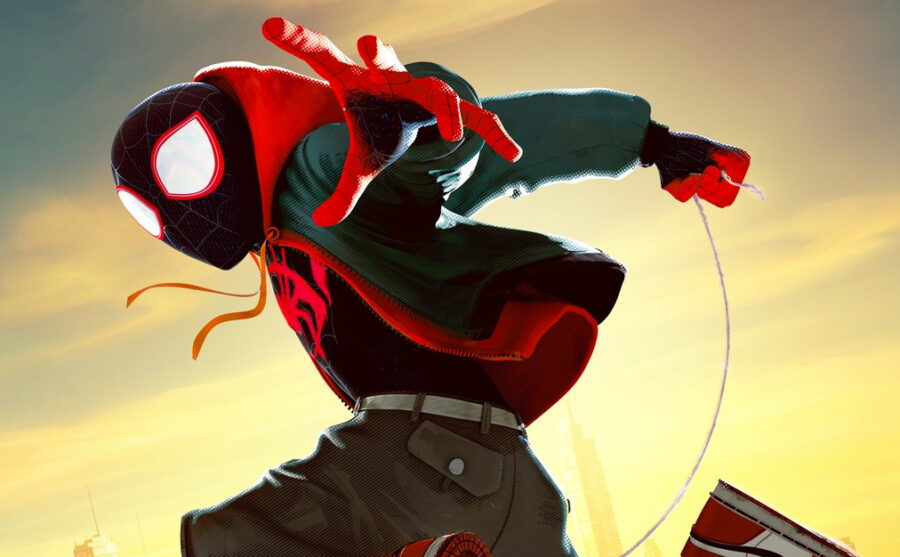
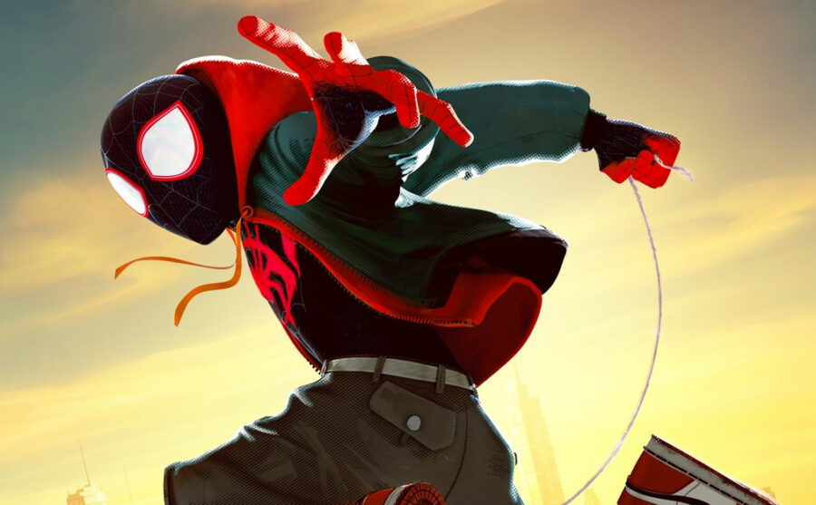

about Miles
Miles Morales is the one and only spiderman
Miles swinging through the city
Powers:
- Venom strike
- invisibility
- grafitti artist
Miles' friends:
Miles has some great friends, Click the links to find out more about his friends.

Miles Morales is the one and only spiderman
Miles swinging through the city
Miles has some great friends, Click the links to find out more about his friends.